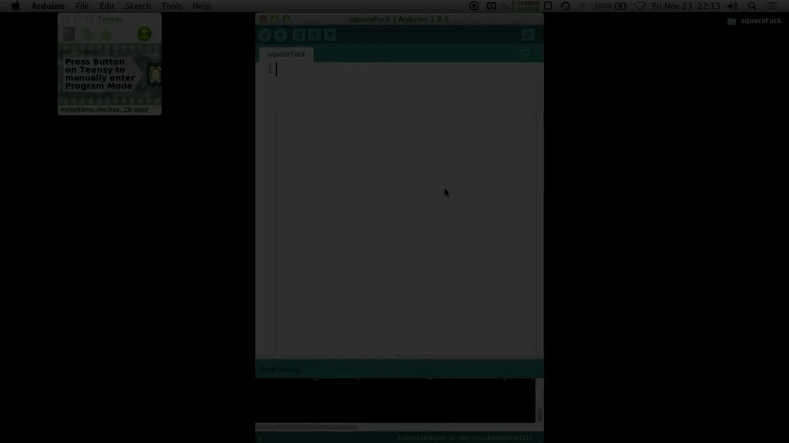
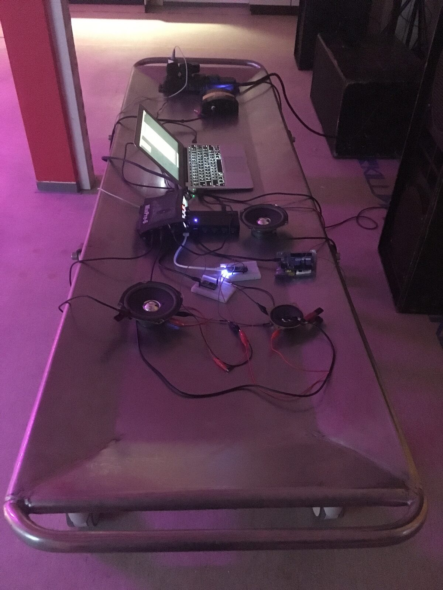
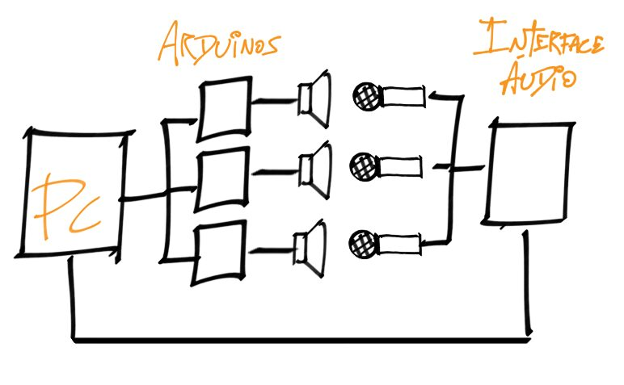

squareFuck
Project Description
squareFuck is a performance where several Arduino boards are programmed in real time in a live coding setting. It is built sonically through the use of short electrical pulses that are sent to discarded speaker cones without any extra circuitry, generating square waves. Computationally it can be seen as a "hyper-extrapolation" of a Blink Sketch, since it relies, as its synthesis algorithm, on the very simple procedure of setting a pin high, waiting for a set amount of time, and then setting it low.
As a performance, it comes from an exploration of the UI/UX of the Arduino IDE and the operating system itself as interfaces. More specifically, it leverages the limitations and constrains of the software ecosystem as affordances for creation. By, for example, not being able to have multiple instances of the IDE open simultaneously targeting different Arduino boards, sonic layers are built from gradual variations of the same base-code which is sent in succession to different boards. This inherent limitation/characteristic of the system led the piece to, structurally, gain a fugato, almost stretto like quality, where sonic material is repeated in rapid succession, with small variations.
This interface/system is being developed (much in line with the "NIMEs with a story" submission track) as part of my current PhD research, where I investigate the limits of technical objects in the context of art making - one angle of it being what I named "saturation of a device", that is, a sensibility deriving from an inquiry into to what extent the creative potential of a piece of technology is depleted once it has already been used for the single piece/performance it was originally developed for.
Type of submission
Option 2: “NIMEs with a story”
Program Notes
squareFuck is a performance where several Arduino boards are programmed in real time in a live coding setting. It is built sonically through the use of short electrical pulses that are sent to discarded speaker cones without any extra circuitry, generating square waves. Computationally it can be seen as a "hyper-extrapolation" of a Blink Sketch, since it relies, as its synthesis algorithm, on the very simple procedure of setting a pin high, waiting for a set amount of time, and then setting it low.
Media

▶squareFuck - Full performance screen capture


Live setup


Signal diagram
Ethics Statement
This performance specifically, as well as my personal research/practice as a whole, deals directly with the issue of accessibility of technological goods in the Global South. Practices such as computer music and electronics are by definition heavy technologically mediated. In that context, practices who foster a DIY ethos such as hardware hacking, the re-utilization of tech "junk", the exploration of the limits of obsolete and old technology, those become survival strategies first and aesthetic statements second. Devices considered "low-cost" in a North-American / European reality (Arduinos and Raspberry-Pis, for example) can be highly inaccessible in other contexts.
squareFuck, although built using open source hardware, was conceived using macOS as its underlying working platform. Since the piece was envisioned by leveraging heavily on an exploration of the affordances of the operating system itself and its modes of operation (e.g.: the performativity of OS-specific keyboard shortcuts for quickly switching the serial port between different Arduino boards), the work, in the version sent as a demo for this application, can only be performed using Mac computers - which are prohibitively expensive in developing countries. A version for Linux is being developed, which will make the whole tech-stack of the work, from OS to hardware, completely FLOSS.